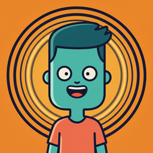

Theo Parallel is a YouTube channel of animated "What if...?" stories. Each episode drops Theo into an alternate version of everyday life and follows where it leads, told in 2D geometric animation with cinematic light. New episodes come out in English, Portuguese, Spanish, German and Indonesian.
Theo Parallel Uploader
Theo Parallel Uploader is a private tool used only by the channel owner. It uses the YouTube Data API to upload the channel's own videos and set their titles, descriptions, thumbnails, captions and audio tracks in each language.
It does not access anyone else's account, and it is not offered to the public. Read the Privacy Policy for details on how it handles data.
Contact
Email: vertex.ai.channel@gmail.com